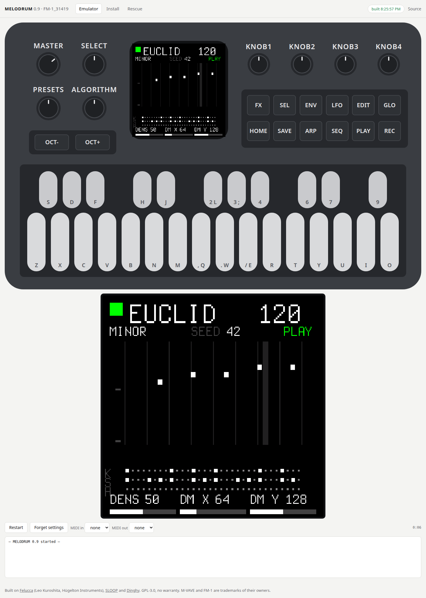
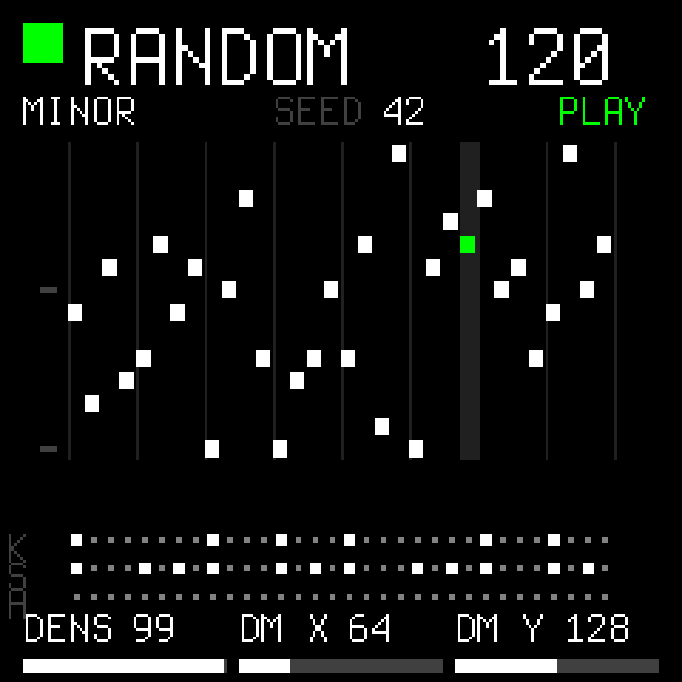

Firmware · M-Vave FM-1 · 28 November 2026
Melodrum
Generative melodies and drums, on the FM-1 itself.


Melogen writes the tune — Random, Markov, Euclidean and Contour generators in 12 scales — and DrumMap, the Grids pattern map, plays kick, snare and hat underneath. Both go out as MIDI over USB (melody ch 1, drums ch 10), with a tiny preview voice so it makes sound on its own.
It follows external MIDI clock (USB / TRS / BLE) or sends its own, and every parameter is on the panel: five pages of knobs, settings saved to the device. Reseed it, turn the knobs, save what you like.
Melodrum is a port of two of my browser music tools — Melogen and DrumMap — rewritten in C for the FM-1's integer-only JieLi chip, on the open foma platform. The C engines are verified against the original JavaScript note-for-note. First flashed and played on a real FM-1 on 28 November 2026.
What's in v1.0
Flash it
No tools to install — the flasher runs right here, in this browser. You need Chrome or Edge on a desktop (it talks to the FM-1 over USB using Web MIDI), and a USB cable.
Plug the FM-1 in, open the flasher, and pick Install. Your browser will ask for MIDI device access — allow it, choose the FM-1, and the bundled v1.0 package installs itself. The same page has an Emulator tab (try Melodrum before you flash) and a Rescue tab that can restore the stock firmware, so you're never stuck.
First time? Back up your current firmware before you overwrite it — the steps, and the hold-OCT− rescue path, are in the flashing guide.
Controls
- PLAY
- Start / stop the sequencer (in EXT clock mode it arms and waits for clock).
- EDIT
- Cycles the five pages: MAIN → GEN → DRUM → SYNTH → SYS. HOME returns.
- Knobs K1–K4
- Whatever the current page puts on them — density, map X/Y, tempo, fills, filter, envelopes, drum levels.
- SEQ / REC
- Next seed / random seed. Same seed, same tune — on every boot.
- F♯4 · G♯4 · A♯4
- Kick / snare / hat mutes. LED lit = muted.
- Keys
- Play the synth voice any time; the bottom octave also sets the root note while stopped.
- SAVE
- Writes all settings to the device; they load again on boot.
Installing: use the web flasher above in Chrome or Edge (the foma CLI flash doesn't work on Windows) — the flashing guide covers backing up your current firmware and the rescue path first. The firmware reports itself as FM-1_31410. Verified on an original FM-1; newer units with the UC25HQ80 flash chip are untested. Melodrum is GPL-3.0; the Grids pattern data is Mutable Instruments' (GPL-3.0), the DrumMap applet MIT.